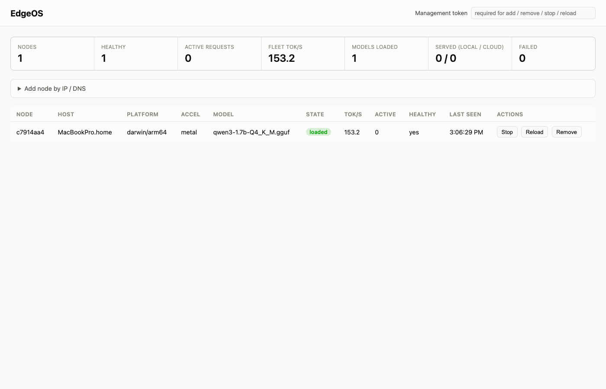

Install a small agent on each device — Raspberry Pi, Jetson, Mac, PC — and they become a single OpenAI-compatible endpoint. EdgeOS routes each request to the best available node and falls back to cloud only when nothing local qualifies.
Status: pre-release. Apache-2.0.

Agents announce themselves over mDNS the moment they start. The router finds them, polls their real capabilities every 2 seconds, and evicts anything that goes quiet — no static node lists to maintain.
Every node benchmarks itself with a real 50-token generation at load time. Routing decisions are based on actual tok/s and actual in-flight load, not guesses.
Requests stay local whenever a node qualifies. Cloud only enters the picture when nothing on your own hardware can serve the request — and failures are typed, explicit, and never a silently restarted stream.
The engine is llama.cpp's llama-server, swappable in principle. EdgeOS is the orchestration layer above it — discovery, routing, and fleet management — not another inference runtime.
This is a real, live EdgeOS node — not a recording. Sign in with GitHub to view it (read-only: this demo can't stop, reload, or remove anything).
| Node | Host | Model | State | Tok/s | Healthy |
|---|---|---|---|---|---|
| Loading… | |||||